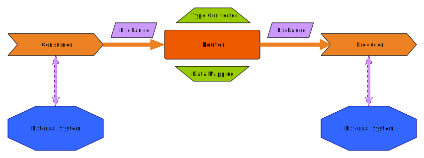

About me
- 19üê±üê± Crazy Cat Lady
- Free and Open Source Advocate
- 2008 Computer Science Graduate (Software Engineer)
- 2009 Dijkstra A* Witch
- 2012 Metadata Wrangler
- 2013 OSGeo Charter Member
- 2017-2019 OSGeo President
- 2016 Women in Tech
- Senior Software Engineer at
- 2019 Integration Druid
- 2020 Apache Software Foundation


Integration Processes
for Serverless
Hybrid Cloud
What do you mean by "Integration Processes"?
When you need components to interact

Create (work)flows and automations
What do you mean by "Hybrid Cloud"?
When you have mixed components
different providers, different languages, different paradigms,...
What do you mean by "Serverless"
Integration Processes
for Serverless
Hybrid Cloud
"Glue"/Middleware

Apache Camel
Compared with Lego
Let's see an example
//Run this workflow every second
from("timer:java?period=1000")
.setBody()
.simple("Hello Camel!")
.to("log:info");
Questions?
You can find more on
https://www.redhat.com/en/technologies/jboss-middleware/fuse
This presentation is on